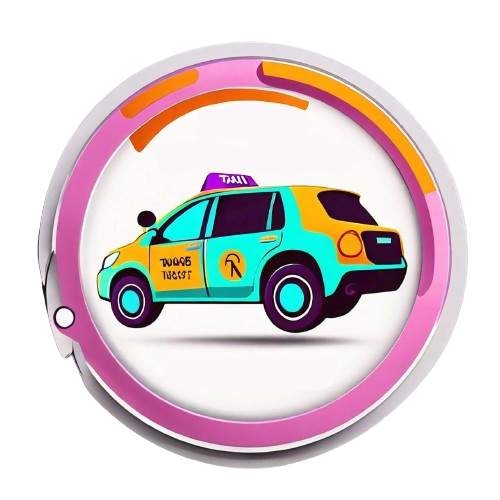
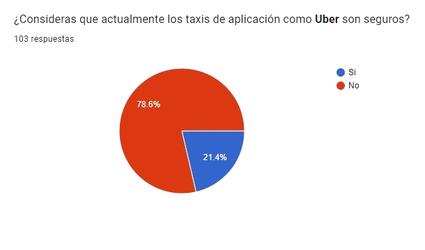

Road Safe
 About usProblemática
Realizamos una encuesta a 100 mujeres con el fin de recopilar un poco de información sobre lo que les acontece día a día al realizar este tipo de viajes, y estos fueron los resultados.
Información del proyecto
En el mundo actual, los servicios de transporte como Uber han transformado la manera en que nos movemos por las ciudades. Sin embargo, la seguridad sigue siendo una prioridad fundamental para todos los pasajeros. RoadSafe es una aplicación innovadora desarrollada para garantizar un viaje seguro y tranquilo en cada trayecto de Uber.
Acerca del proyecto
Nuestra app cuenta con un sistema de alerta que se pone en marcha cuando se haya reconocido alguna acción sospechosa.
Funcionalidades
Envío de mensajes
Nuestra app, al detectar alguna anomalía en el viaje, inmediatamente enviará nuestra ubicación en tiempo real a los contactos que hayamos elegido al instalar la app.
Alarma potente
La app cuenta con una alarma incorporada que sonará cada vez que considere que estás en peligro. Esto con el fin de que despiertes si has decidido echar una siesta de camino a casa después de una noche de fiesta.
¿Cómo sabrá la app que hay un peligro?
La app utilizará algoritmos de Machine Learning como árboles de decisión para determinar
un posible riesgo.
Además, hará uso de Ciencia de Datos para cotejar diferentes registros de situaciones
ya acontecidas para ayudar a prevenir algún accidente.
Tecnologías a utilizar
Python
Python es un lenguaje de programación que tiene en su haber miles de librerías útiles que permiten implementar los algoritmos necesarios para lograr el desarrollo de nuestra app.

Flet
¿Quieres una aplicación web, una aplicación móvil, una aplicación de escritorio? Flet permite crear todas estas programando solo una. Es un framework similar a Flutter, pero diseñado para usar Python como lenguaje de programación, además de que es muy fácil de compilar en los dispositivos que lo requieran, ahorrando un 50% el tiempo de desarrollo.
Costos
Considerando una aplicacion movil de mediana complejidad, con un equipo de desarrollo de 4 personas (dos desarrolladores backend, un desarrollador frontend y un diseñador UX/UI), y asumiendo un desarrollo para iOS y Android, podemos hacer una estimación generalizada.
Modelo COCOMO
Esfuerzo (en meses-persona) = a * (Tamaño del proyecto)^b
a y b son constantes que dependen del modo de desarrollo (orgánico, semi-dependiente, embebido). Para proyectos pequeños
y orgánicos, valores típicos son a = 2.4 y b = 1.05.
Tamaño del proyecto: Se puede medir en líneas de código (LOC), puntos de función o alguna otra métrica relevante.
Esfuerzo = 2.4 * (2000)^1.05 ≈ 10.6 meses-persona
Si el costo por persona-mes es de $5000, el costo total estimado sería de aproximadamente $53,000.